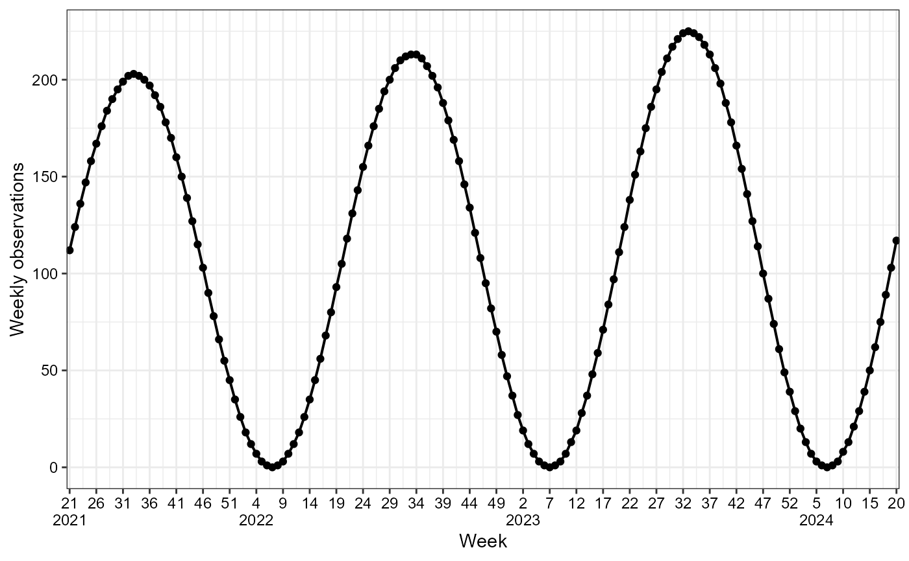
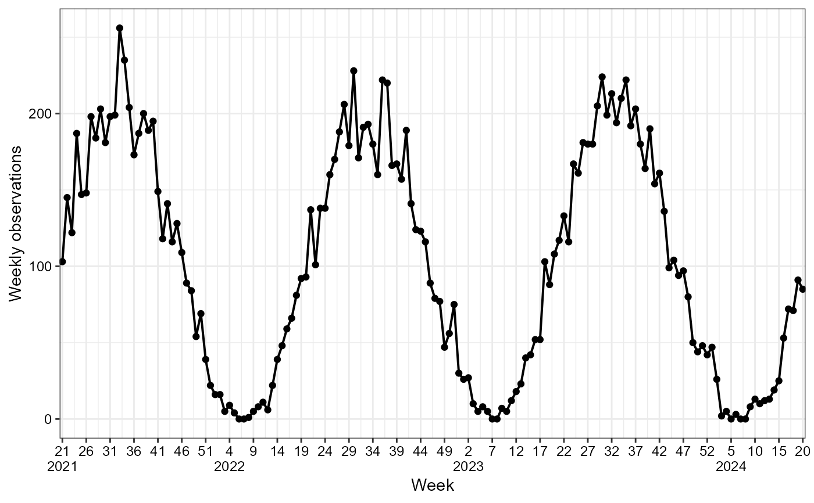
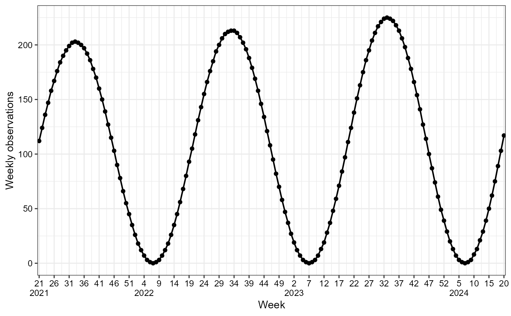
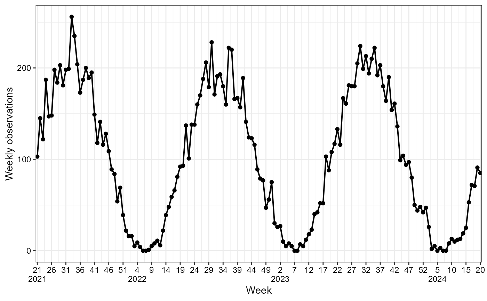

Generate Simulated Data of Seasonal Waves as a tsd object
Source: R/generate_seasonal_data.R
generate_seasonal_data.RdThis function generates a simulated dataset of seasonal waves with trend and noise. This function assumes 365 days, 52 weeks, and 12 months per year. Leap years are not included in the calculation.
Arguments
- years
An integer specifying the number of years of data to simulate.
- start_date
A date representing the start date of the simulated data.
- amplitude
A number specifying the amplitude of the seasonal wave. The output will fluctuate within the range
[mean - amplitude, mean + amplitude].- mean
A number specifying the mean of the seasonal wave.
- phase
A numeric value (in radians) representing the horizontal shift of the sine wave, hence the phase shift of the seasonal wave. The phase must be between zero and 2*pi.
- trend_rate
A numeric value specifying the exponential growth/decay rate.
- noise_overdispersion
A numeric value specifying the overdispersion of the generated data. 0 means deterministic, 1 is pure poisson and for values > 1 a negative binomial is assumed.
- relative_epidemic_concentration
A numeric that transforms the reference sinusoidal season. A value of 1 gives the pure sinusoidal curve, and greater values concentrate the epidemic around the peak.
- time_interval
A character vector specifying the time interval. Choose between 'days', 'weeks', or 'months'.
- lower_bound
A numeric value that can be used to ensure that intensities are always greater than zero, which is needed when
noise_overdispersionis different from zero.
Value
A tsd object with simulated data containing:
'time': The time point for the corresponding data.
'cases': The number of cases at the time point.
Examples
# Generate simulated data of seasonal waves
#With default arguments
default_sim <- generate_seasonal_data()
plot(default_sim)
 #With an exponential growth rate trend
trend_sim <- generate_seasonal_data(trend_rate = 1.001)
plot(trend_sim)

#With noise
noise_sim <- generate_seasonal_data(noise_overdispersion = 2)
plot(noise_sim)

#With distinct parameters, trend and noise
sim_data <- generate_seasonal_data(
years = 2,
start_date = as.Date("2022-05-26"),
amplitude = 2000,
mean = 3000,
trend_rate = 1.002,
noise_overdispersion = 1.1,
time_interval = c("weeks")
)
plot(sim_data, time_interval = "2 months")
#With an exponential growth rate trend
trend_sim <- generate_seasonal_data(trend_rate = 1.001)
plot(trend_sim)

#With noise
noise_sim <- generate_seasonal_data(noise_overdispersion = 2)
plot(noise_sim)

#With distinct parameters, trend and noise
sim_data <- generate_seasonal_data(
years = 2,
start_date = as.Date("2022-05-26"),
amplitude = 2000,
mean = 3000,
trend_rate = 1.002,
noise_overdispersion = 1.1,
time_interval = c("weeks")
)
plot(sim_data, time_interval = "2 months")